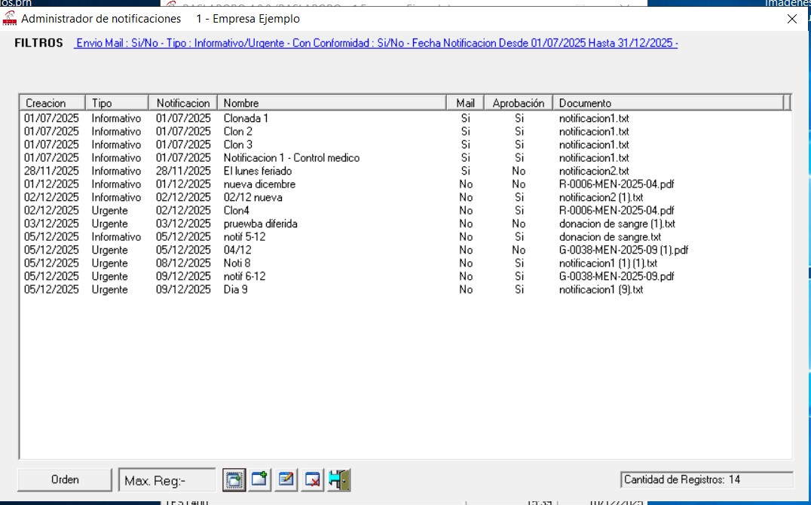
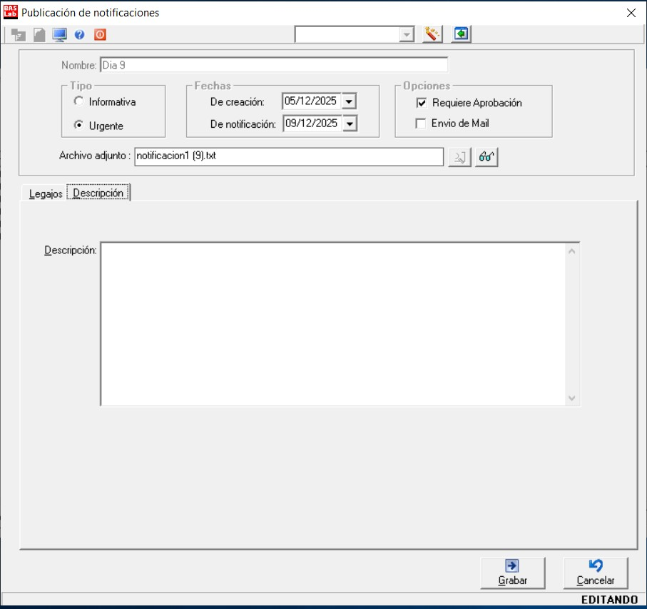
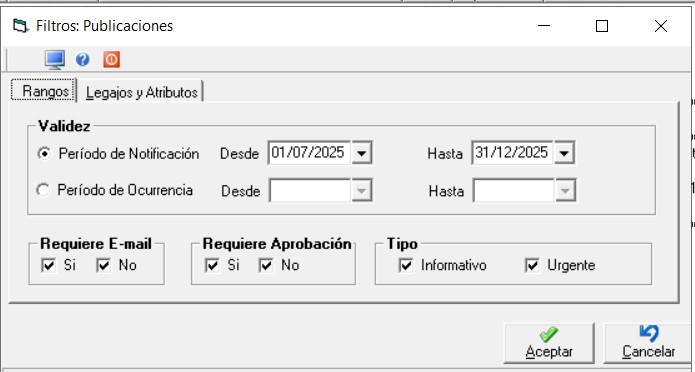

El menú “Administración publicaciones de notificaciones” (disponible en Novedades/De personal) tiene la funcionalidad necesaria para generar notificaciones destinadas a los empleados, que éstos podrán consultar desde BAS Laboro Autogestión.
Las notificaciones pueden ser de los tipos “Informativa” o “Urgente”, se puede programar la fecha de notificación y se puede determinar si la misma requiere conformidad por parte del empleado y/o envío de un mail.
Las publicaciones de notificaciones pueden clonarse para una rápida generación, es decir, puede generarse una nueva notificación a partir de una existente copiando su contenido y realizando las modificaciones que se requieran.
Al acceder se presenta una pantalla que muestra las notificaciones cursadas y el detalle de las mismas.

Para dar de alta una notificación se debe completar la información de la siguiente pantalla:
Se debe identificar a la notificación con un nombre y adjuntar un archivo en el campo “Archivo adjunto”, que contiene el texto de la notificación a informar.
Si bien el archivo puede ser de cualquier tipo, es conveniente que el archivo que se adjunta sea un “pdf” ya que puede visualizarse directamente en la página de Autogestión. Los archivos de otros tipos deben descargarse para su posterior visualización.
Las notificaciones pueden ser de tipo “Informativa” o “Urgente”.
De tratarse de una notificación urgente, cuando el empleado ingrese en Autogestión le aparecerá un aviso indicando que tiene notificaciones de ese tipo y en la lista aparecerán con un icono amarillo a la derecha de la fecha.
Puede indicarse si la notificación “Requiere aprobación” y si requiere “Envío de mail”.
Las notificaciones informativas envían mail a los empleados solo cuando está tildada la opción “Envío de mail”, el envío se realiza en la fecha indicada en “De notificación”. Las urgentes siempre envían mail.
Para el formato de los mails que se envían se dispone de dos plantillas predefinidas que pueden modificarse, encontrándose en C:\Users\Public\BLBAutogestion\FormatosHtmlMails
Si se indica “Requiere aprobación” el empleado, en Autogestión, deberá prestar conformidad o no.
En la columna “Estado”, según la acción que realice el empleado en Autogestión, puede figurar “Conforme/No conforme”, “Descargado”, "Visualizado" (solo pdf) o “Pendiente” (si aún no ha realizado ninguna acción)
En la columna “Respuesta”, se exhibe, en caso que el empleado la haya ingresado, una observación relacionada a su firma conforme o no conforme.
Por último, en la columna “Fecha”, se exhibe la fecha en que el empleado realizó la acción en Autogestión (descarga, visualización, firma conforme o no conforme).
En la solapa “Descripción” de la siguiente pantalla, puede ingresarse una aclaración adicional, se exhibirá en Autogestión en el campo del mismo nombre.
El icono que se encuentra a la derecha de la lupa, permite seleccionar un archivo y visualizar su contenido.

Volviendo a la pantalla siguiente, al pie, se dispone de iconos para clonar una notificación (generar una notificación en base a otra existente), crear una nueva, modificar una existente o eliminarla.
Para clonar una notificación, una vez seleccionada, presionando el icono correspondiente se obtiene una copia; bastará con cambiar la fecha y, por ejemplo, el archivo y/o los legajos involucrados para obtener una nueva notificación.
Vale aclarar que las notificaciones pueden eliminarse siempre y cuando el estado de las mismas sea “Pendiente” para todos los legajos involucrados.
Al editar una notificación que tiene un estado distinto de pendiente no se podrá modificar ningún dato, solo agregar legajos en la grilla.
En el enlace disponible a la derecha de “FILTROS”, se dispone de opciones para limitar las notificaciones que se exhiben en la grilla. A través de dicho enlace, se pueden establecer diferentes criterios en la solapa “Rangos” y en la solapa “Legajos y Atributos,” determinar las notificaciones que contiene dichos legajos.
